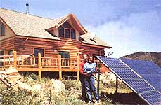

How a Colorado couple gained energy independence with a lot of gumption and a little elbow grease.
Big decisions never come easily, especially when they go against the grain. So when my wife LaVonne and I told our small-town friends that we intended to untether ourselves from the utility companies, you can imagine the picture this conjured up in their minds: a pair of misguided eccentrics sitting on a hard bench in a crude cabin, huddling around a dim, 12-volt bulb reading dog-eared books with oversized type, while bare wires spark and leaky batteries sizzle in the dark, cold recesses.
Actually, that image wasn't too far from my thoughts three years ago when I knew next to nothing about renewable energy. But we had owned our Colorado mountain property since the late 1980s, and it was time to move out of the flatlands and into the green, spacious hills outside of Masonville, on the edge of the Rocky Mountains. The unwieldy mortgage on the farm alone was enough to tip our hand. But I'd also long ago promised to build LaVonne a log home. Even though she never held my feet to the fire on it, I knew my promise was a debt she dearly wanted paid.
So we sold our lowland farm in the spring of 1999, hauled our belongings up the steep mountain roads and established a comfortable, but modest existence in small cabin, with a few tools and an old, cantankerous Coleman gas generator.
I'd like to say using solar and wind power was a high-minded motivation to save the planet, but our decision-like everyone else's in our area-really-was dictated by the fact that the nearest power line was at least $14,000 away. We figured we could configure a commendable wind and solar system for close to the same price of a few ugly poles and a lot of wire, and avoid a lifetime of electric bills. We were right: By doing the work ourselves, we installed a complete, trouble-free system for less than 512,000.
While I busied myself with plans for the construction of our new house, LaVonne researched suppliers, compared prices and finally ordered everything we needed to generate our own electricity.
When the equipment arrived several weeks later, I noticed the only thing that wasn't heavy, bulky and expensive was the two-page packing slip. It read like a list of instructions to build the International Space Station. But, being limited by a strict budget, the thought of hiring a renewable energy expert was never an option. Instead, I tapped into free, local resources: my neighbors. After all, they'd been living off the grid for years. I made a few visits around the mountain and asked a million questions about wiring this and configuring that until I was fairly certain I knew what I was doing.
The first system was a crude (eminently non-code-compliant) setup. When I wasn't welding frames for the solar array, I was studying the manuals that came with the boxes and boxes of alien parts and equipment. Much to my surprise, after a time it began to look possible, if not exactly easy. I wired it all together, testing and re-testing as I worked. It was a basic solar-electric system: a solar array, a charge controller, a battery bank and an inverter.
Simple. Even so, I don't remember if, when I turned it on for the first time, I expected sparks and then an explosion, or just one massive blast. But the system only powered up and hummed. I screwed a lightbulb into a socket. It lit. I plugged in a drill. It spun. Then I decided to go for broke and plugged in my table saw. When the saw whirred into service without hesitation I had the awesome feeling I was witnessing a miracle.
When the saw whirred into service ... I had the awesome feeling I was witnessing a miracle.
I had just wired together my first photovoltaic system. The myriad nuances of even that little system would take months to grasp, but our chunk of the mountain had clean, quiet electricity for the very first time. A little wood-heated cabin with a couple of lights and a few appliances, however, is a weekender's toy compared to what we had in mind. The new house we were planning was an 1,800-square-foot, handcrafted log structure with radiant-floor heat, a system that uses a propane-fired boiler to heat water, which then runs through plastic tubing embedded in lightweight gypsum concrete between the subfloor and the finished floor. Since the hot water for each of the five zones is circulated by thermostat-controlled 120-volt pumps, we knew it would be taxing for our solar and wind system. To further complicate things, we also wanted a washer and dryer, a dishwasher and refrigerator, computers and TVs, and a microwave oven. And we planned to use our hybrid solar-and-wind system to draw water from 540 feet underneath the ground.
The smartest decision we ever made was not to ask any professional installers if we were spitting into the wind, since everyone we've talked to since then has told us that it would take two inverters to run such a big well pump, in addition to everything else (which would be true, I suppose, if we tried to run everything all at once.)
In our blissful state of ignorance, we did some rough calculations, took our best guess, and stood by our decision. And in the end, our system supplied enough power to run all our appliances and enabled us to establish our publishing business at home. The range, clothes dryer and refrigerator are fueled by propane, and every light in the house is a compact fluorescent. Our biggest TV is a 20-inch. Our electricity is provided by a 1,000-watt wind generator, which drills a 9foot-diameter hole in the wind, and a 1,140watt solar array that captures a mere 100 square feet of sunlight. Our storage capacity consists of 20 golf-cart batteries. With cell phones and satellite dishes for TV and Internet service, we have all the material trappings of a modern life, without the pollution that typically accompanies it.
So, you may be wondering, what's the catch? The funny thing -and I say this honestly-is there isn't any, unless you believe that turning off lights when you leave a room or not letting the water run full-bore when brushing your teeth are hardships. Of course, leaky toilets and faucets are forbidden, and electric space heaters are unthinkable, but it's really a small sacrifice when you consider the satisfaction of never sending another penny to the power company, or suffering through another blackout.
Last year I met a guy who said it would scare him to death to be off the grid. I just smiled and said, "This may sound strange, but it would scare me to death to be back on it." I wasn't joking. I'm fortunate to have had the foresight to buy this land all those years ago, and I'm glad LaVonne and I are able to enjoy it with neighbors who are as independent as we are. Best of all, I'm thankful that all we need to light up the pitch-black night is a little breeze and a few rays of sunshine.
Rex Ewing and his wife LaVonne share how they built their life on the land in their new book, Logs, Wind and Sun, available on MOTHER's Bookshelf, Page 103.
Tell us your story of self-sufficiency, and if it's chosen for publication, we'll pay you $100. We'd especially like reports on how you harvest and store rainwater for your homestead. Submit your Report of about 1,000 words, along with several photos, to: Firsthand Reports; Mother Earth News; 1503 SW 42nd St.; Topeka, KS 66609-1265.
- MOTHER
|
 With a little hands-on help from their neighbors, Rex and LaVonne Ewing achieved energy independence in their off-the-grid log home, powered by solar-electric panels and wind generator. |
|
|